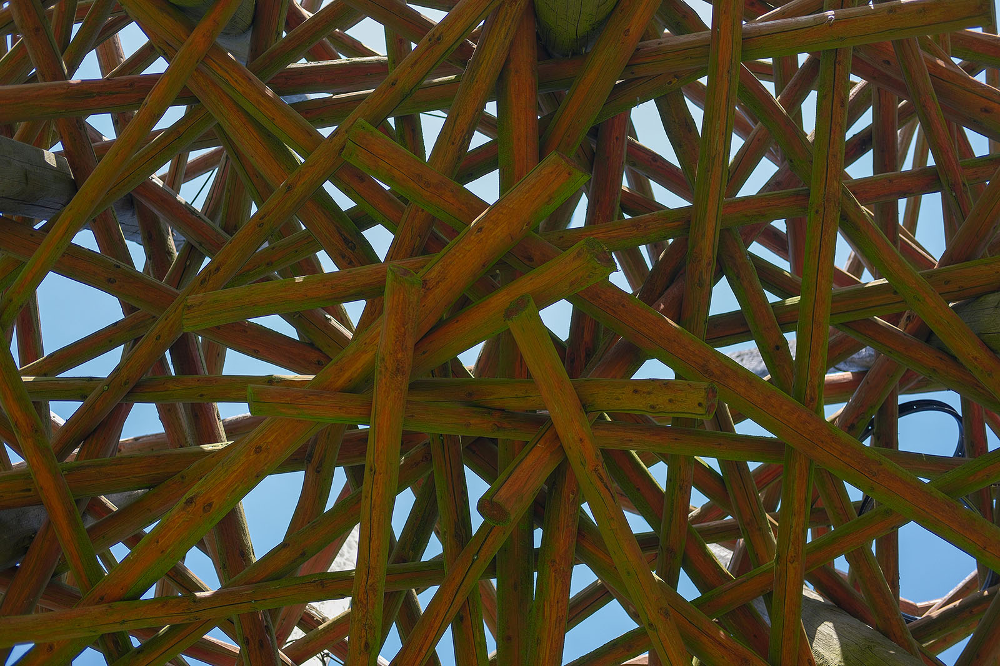
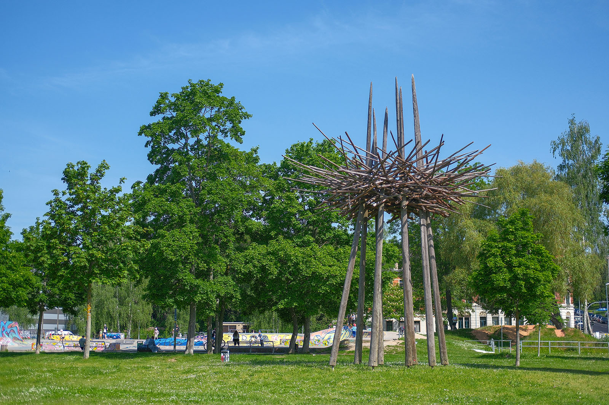
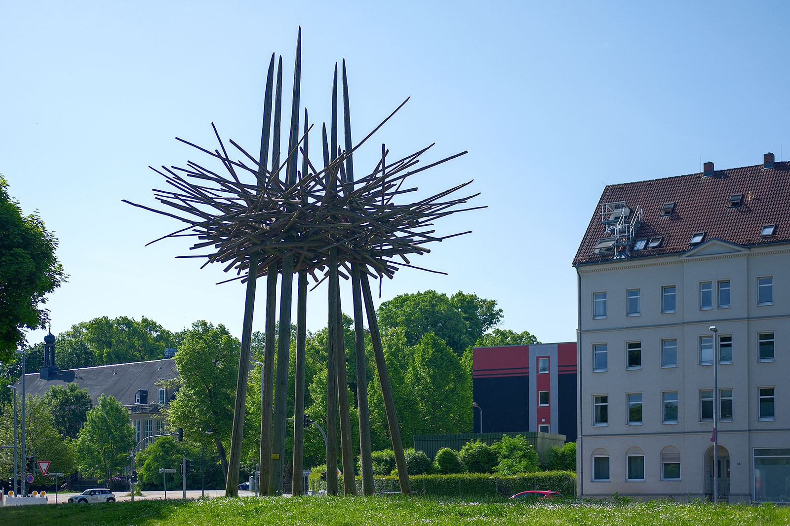
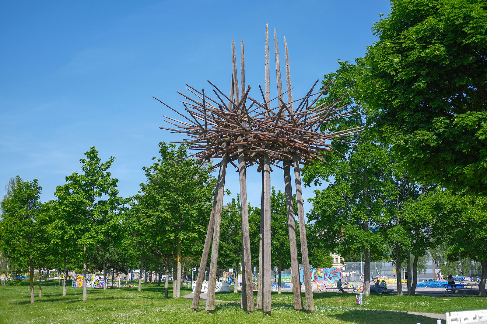

Recherche und Werkbeschreibung: Roman Pilz. Fotografien: Frank Krüger. Text und Bild wechseln sich wie in einem Magazin ab. Ein Klick auf ein Bild öffnet die Großansicht.
Das "Liebesnest" von Christoph Roßner hat seinen heutigen Standort am Rande des Konkordiaparks gefunden. Das überdimensionierte Vogelnest als Symbol für Natur und Romantik beweist damit, dass die Kunst in Chemnitz Flügel hat und sich jederzeit neu an einem der immer noch zahlreichen Freiräume der Stadt einnisten kann.
Christoph Roßner wurde 1961 in Schlema (heute Aue-Bad Schlema) geboren. Roßner besuchte schon als Kind den Kinderschnitzzirkel von Walter Pflugbeil in Neustädtel. Von 1978 bis 1981 machte er eine Lehre zum Holzbildhauer.
Von 1992 bis 1996 studierte er an der FH Angewandte Kunst Schneeberg und machte seinen Abschluss als Diplomdesigner für Holzgestaltung. Von 1996 bis 1998 vertieft er sein Wissen auf den Feldern Metallgestaltung und Film. Seit 1991 arbeitet Roßner in Aue-Bad Schlema als freiberuflicher Bildhauer, Objekt- und Installationskünstler.
Er ist Mitglied im Chemnitzer Künstlerbund. Zahlreiche seiner Werke sind in Chemnitz und Sachsen im öffentlichen Raum ausgestellt. Roßner beteiligte sich in jüngerer Zeit auch an Projekten von Chemnitz als Europäische Kulturhauptstadt 2025.
Es entstand eine Skulptur für den Purple Path (Projekt Annaberger Impuls I: Holz - aufgestellt im Stadtpark Lugau) und ein "Rettungsring" aus Edelstahl und Eiche auf der Interventionsfläche unter dem Bahnviadukt an der Beckerstraße, die zugleich als Eingang zum Stadtpark fungiert.
Die ursprüngliche Konzeption des Kunstwerks entstand als Idee für einen Workshop des Sächsischen Künstlerbunds im Rahmen des Projekts "Baustelle K7", das Anfang der 2000er Jahre die zentrale Bedeutung von Kunst im öffentlichen Raum diskutieren, dokumentieren und fortentwickeln sollte. Damals standen die Industriebrachen der Zwickauer Straße, am Fuße des Kaßbergs, im Fokus.
Roßner entwickelte in diesem Kontext 2004 die Vision, auf dem Dach der ruinösen Sporett-Fabrik an der Ulmenstraße (ehemals Sigmund Goeritz AG) riesige rote Nester zu platzieren. Angeleuchtet sollten diese schon von Weitem signalisieren, dass auch (oder vielleicht gerade) in "Lost Places" die Liebe keimt und sich mit den imaginierten Störchen sprichwörtlich wieder Prosperität einstellen kann.

Was an der Zwickauer Straße nur Vision blieb, konnte 2004 im Zentrum einen ersten, temporären Platz finden. Als die GGG, die größte und im Besitz der Stadt befindliche Wohnungsbaugesellschaft in Chemnitz, nach 2001 den Auftrag erhielt, das leerstehende, ehemalige Warenhaus Tietz (zuletzt Kaufhof) zum Kulturzentrum umzubauen, wurde auf dem Vorplatz an der Reitbahnstraße auch ein Sockel eingerichtet, der als Aufstellungsort für große stadträumliche Kunst dienen soll.
2004/2005 war Roßners Nest das erste Kunstwerk, das an diesem Standort gezeigt wurde. Das Nest fand dort seine endgültige Form und wurde hoch über den Köpfen der Betrachter, zwischen circa acht Meter hohen, spitz zulaufenden Pfählen gebaut. Die krummen, naturwüchsigen Fundhölzer erscheinen dort oben kunstvoll, wie zwischen lange, leicht geneigte Halme geflochten, und stabilisieren sich im Verbund gegenseitig.

2007 wurde das Kunstwerk im Zusammenhang der Neugestaltung des Konkordiaparks an seinen jetzigen Ort gebracht. Der Ort scheint nun sogar noch besser zur Intention des Künstlers zu passen. "Konkordia" als "Einklang" ist erstens schließlich die Voraussetzung dafür, dass sich das Paar zum Nestbau und Liebesspiel zusammenfindet, und zweitens ist der Park als Sport- und Freizeitareal ganz der Jugend gewidmet, dem Bevölkerungsteil, der die Erneuerung der Stadt noch am meisten mitgehalten kann und soll.
Auf grüner Wiese, zwischen jungen Bäumen, steht das Nest nun und wenige ahnen noch, dass direkt hinter dem Horst vor hundert Jahren, die Güter der Hartmannfabrik über ein Anschlussgleis in die Welt exportiert wurden und unweit von Häusern und Geschäften die heute verschwundene, namensgebende Konkordiastraße schnitt.

Im siebten Himmel
Die Holzskulptur „Liebesnest“ (2006/2007) von Christoph Roßner im Konkordiapark
